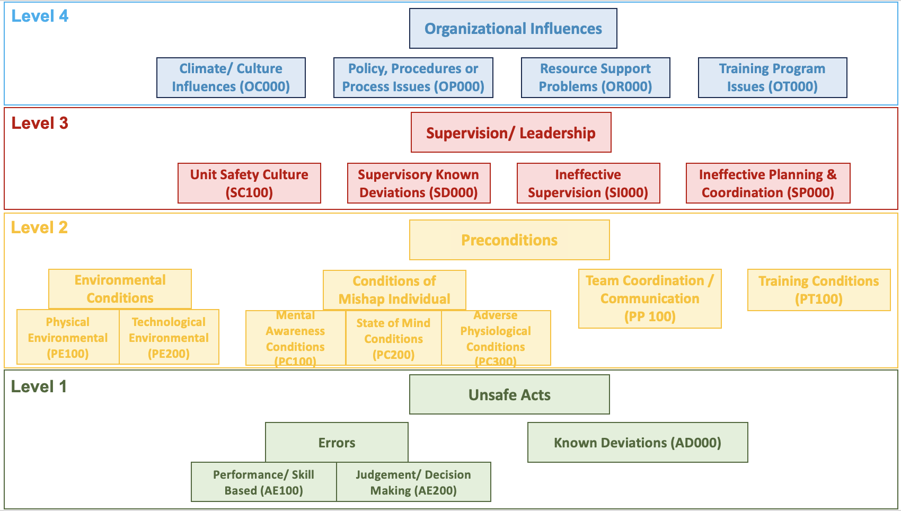
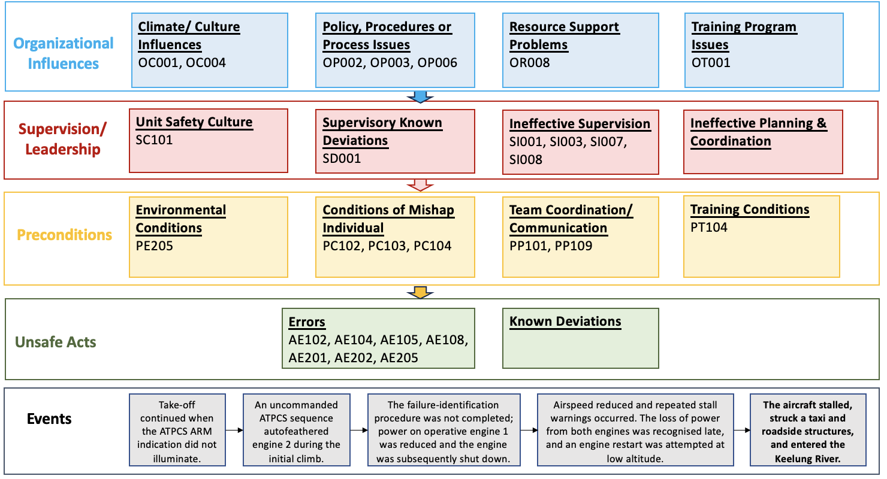

In brief
- HFACS organises evidence across unsafe acts, preconditions, supervision or leadership, and organisational influences.
- This case study applies the Department of Defense HFACS version 8 taxonomy to the official investigation report for TransAsia Airways Flight GE235.
- The exercise contains 27 selected code assignments: seven Organizational Influences, six Supervision/Leadership factors, seven Preconditions, and seven Unsafe Acts.
- The classifications represent one reasoned interpretation. They are not official investigation findings, and assigning a code does not demonstrate that one factor caused another.
- HFACS is most useful when it prompts analysts to look beyond the most visible human error and examine the conditions that shaped performance.
Why HFACS matters
HFACS provides a structured way to examine human performance beyond the immediate unsafe act. Rather than treating an error as the end of the explanation, it prompts consideration of the person’s mental and physical conditions, the operating environment, technology, team coordination, training, supervision or leadership, and wider organisational arrangements.
Wiegmann and Shappell (2003) developed HFACS to operationalise the active and latent failure concepts associated with Reason’s Swiss Cheese Model. The framework defined the otherwise abstract “holes” in the model so that human and organisational factors could be identified and classified during aviation accident investigation and analysis.
HFACS can support different parts of an investigation. During evidence collection, its categories can prompt investigators to examine areas that might otherwise receive insufficient attention. During analysis, it can provide a consistent way to organise evidence-supported factors, compare patterns across events and consider where safety action is needed. Factual evidence, analytical interpretation and recommendations should remain distinguishable and traceable.
Every selected factor should be considered when safety recommendations are developed. This does not require a separate recommendation for every code. One recommendation may address several related conditions, while some issues may already be covered by existing or planned safety action. The important test is whether the recommendations adequately address the significant evidence-supported conditions identified through the analysis.
HFACS can help shift recommendations away from responses that concentrate only on the individual, such as retraining, reminding or disciplining frontline staff. Where the evidence supports it, action should also address the conditions that shaped performance, including technology, procedures, team coordination, training systems, supervision or leadership, resource support and organisational governance. The Department of Defense guide links HFACS coding to evidence-based supporting statements, corrective actions and trend analysis, and advises analysts to remove codes that cannot be supported by the evidence.
HFACS is built on the Swiss Cheese Model, so the assumptions and limitations of that model influence how HFACS may be understood and applied. Reason’s model helped direct attention beyond frontline actions towards local conditions, defences and organisational influences. It was not intended to establish that every accident follows one orderly pathway through a fixed sequence of levels.
The core idea
HFACS was developed by Wiegmann and Shappell (2003) from concepts associated with Reason’s Swiss Cheese Model. Different versions have subsequently revised its terminology, definitions and coding structure.
This exercise uses the 2022 Department of Defense HFACS version 8 taxonomy, which has four levels.
Level 4: Organizational Influences
This level covers conditions associated with the wider organisation:
- Climate/Culture Influences
- Policy, Procedures or Process Issues
- Resource Support Problems
- Training Program Issues
Level 3: Supervision/Leadership
This level covers actions, practices and conditions associated with supervision or leadership:
- Unit Safety Culture
- Supervisory Known Deviations
- Ineffective Supervision
- Ineffective Planning and Coordination
Level 2: Preconditions
This level covers conditions surrounding the performance of the individual or team:
- Environmental Conditions
- Conditions of Mishap Individual
- Team Coordination/Communication
- Training Conditions
Level 1: Unsafe Acts
This level covers actions most closely associated with the occurrence:
- Errors
- Known Deviations
Errors are divided into Performance/Skill Based Errors and Judgment and Decision-Making Errors.
The terminology and codes in version 8 differ from those in the original HFACS framework. The earlier framework used the level names Organizational Influences, Unsafe Supervision, Preconditions for Unsafe Acts and Unsafe Acts. The version used in this exercise replaces Unsafe Supervision with Supervision/Leadership and shortens Preconditions for Unsafe Acts to Preconditions. Analyses and datasets should therefore identify the HFACS version used.
Department of Defense (2022) places code assignment after reconstruction of the event and identification of the relevant factors. It also requires an evidence-based supporting statement for each selected code. This exercise follows the same evidence-first sequence, while treating the placement of evidence within the taxonomy as classification rather than proof of a fixed causal chain.

The GE235 case and the evidence used
On 4 February 2015, TransAsia Airways Flight GE235, an ATR72-600, departed Taipei Songshan Airport for Kinmen. The aircraft experienced a loss of control during the initial climb and entered the Keelung River. Forty-three occupants died.
The investigation found that an intermittent discontinuity associated with the No. 2 engine auto feather unit probably initiated an uncommanded autofeather sequence. During the subsequent response, the crew did not complete the documented failure-identification and engine-flame-out procedures. Power on the operative No. 1 engine was reduced, and the engine was subsequently shut down. The aircraft lost power from both engines, stalled and could not recover within the remaining altitude (Aviation Safety Council, 2016, pp. I-II, 175-177).
The official report separates its conclusions into three categories:
- findings related to probable causes;
- findings related to risk;
- other findings.
Findings related to probable causes concern factors shown, or almost certainly shown, to have operated in the occurrence. Findings related to risk concern safety deficiencies that could adversely affect safety, including some that could not be clearly shown to have operated in this accident. Other findings provide clarification or information relevant to safety improvement (Aviation Safety Council, 2016, pp. 174-175).
This HFACS exercise is a secondary analysis of evidence in the published report. It does not replace the investigation, change the status of its conclusions or imply that the Aviation Safety Council used HFACS.
Read the official GE235 investigation report on the Taiwan Transportation Safety Board website.
HFACS exercise: classify before viewing the completed analysis
For each item of evidence, consider four questions:
- What does the report establish?
- Which HFACS v8 category best represents the evidence?
- Which part of the classification is directly supported by the report, and which part involves analytical interpretation?
- Could another classification reasonably be defended?
Evidence A: unclear take-off rejection guidance
The report found no clear documented company policy communicating the requirement to reject take-off when the automatic take-off power control system did not arm (Aviation Safety Council, 2016, p. 176).
The exercise applies:
OP003, Provided Unclear, Impractical, or Inadequate Policy, Procedural Guidance or Publications
The evidence may also prompt examination of training, supervision or regulatory oversight. Those classifications require their own supporting evidence and should not be inferred solely from the policy problem.
Evidence B: fixation and instrument interpretation
The report described the pilot flying as remaining focused on engine 1 despite the engine and warning display and statements from the pilot monitoring identifying engine 2.
The exercise applies:
- PC102, Fixation (Channelized Attention)
- AE108, Misinterpreted/Misread Instrument
The first code describes a condition that affected the distribution of attention. The second concerns the interpretation or recognition of the displayed information. Another analyst might classify aspects of this evidence differently because cognitive conditions are reconstructed from recorded actions, displays and speech rather than observed directly.
Evidence C: communication and task management
The report identified ineffective coordination, communication and threat and error management. This included non-standard callouts, limited challenge, poor feedback and failure to integrate information provided by the pilot monitoring (Aviation Safety Council, 2016, pp. 167-169, 177).
The exercise applies:
- PP101, Ineffective Team Resource Management
- PP109, Task/Mission Planning and/or Briefing Inadequate
Related evidence also appears under task saturation, procedure use and task prioritisation. Each code should represent a distinct aspect of the evidence rather than repeating the same finding in several categories.
Evidence D: recurring weaknesses were not adequately addressed
The report found recurring procedural non-compliance within TransAsia’s ATR fleet and stated that the pattern was consistent with poor safety culture. It also found that previous performance weaknesses and known safety issues were not effectively addressed (Aviation Safety Council, 2016, pp. 159-160, 165-166, 178-179).
The exercise applies:
- OC001, Organizational Culture Created Increased Risk
- SC101, Unit Safety Culture
- SI007, Failed to Identify or Correct Hazardous Practices, Conditions, or Guidance
These codes classify different aspects of the evidence at the Organizational Influences and Supervision/Leadership levels. Their inclusion does not establish that one caused another. Each classification should be considered on the strength of its own supporting evidence.
Evidence E: the initiating technical condition
The exercise classifies the uncommanded autofeather sequence as:
PE205, Automated System Created a Hazardous Condition
The event did not begin with a crew action. Excluding automation behaviour, system information and technological conditions would narrow the analysis before it began.
Try the exercise first
Review the report evidence, make your own coding decisions and record any plausible alternative classifications before opening the completed workbook.
Download the HFACS v8 GE235 exercise findings (Excel)
The workbook contains the selected codes and supporting report evidence. It presents one reasoned interpretation and should be used for comparison and discussion, not as a definitive answer key.
What the HFACS classification reveals
The exercise contains 27 selected code assignments across the four HFACS v8 levels.
Swipe horizontally to view the full table.
| HFACS v8 level | Selected codes | Number |
|---|---|---|
| Organizational Influences | OC001, OC004, OP002, OP003, OP006, OR008, OT001 | 7 |
| Supervision/Leadership | SC101, SD001, SI001, SI003, SI007, SI008 | 6 |
| Preconditions | PE205, PC102, PC103, PC104, PP101, PP109, PT104 | 7 |
| Unsafe Acts | AE102, AE104, AE105, AE108, AE201, AE202, AE205 | 7 |
The classification shows that relevant evidence was identified across technology, crew performance, operational conditions, supervision or leadership, training, organisational policy and safety culture. It does not show that every code had equal importance, that the codes were independent or that the accident developed through a four-stage sequence.
Training-related evidence illustrates why classification requires judgement. Evidence may concern the formal training programme at the Organizational Influences level, the provision of training at the Supervision/Leadership level, or the individual’s proficiency at the Preconditions level. These categories represent different analytical propositions. The supporting evidence for each should be considered separately.
The exercise also demonstrates how recommendations can move beyond the Unsafe Acts level. A procedure error may indicate a need to improve the procedure itself, the design of training, the quality of supervision, the management of recurrent performance concerns or the organisational process used to assess competence. The appropriate action depends on the evidence, not simply on the level at which the most visible error was classified.

What HFACS helps us see
HFACS prompts analysts to examine immediate operator actions together with the conditions, supervision or leadership and organisational arrangements surrounding them. This can reduce the tendency to focus primarily on the sharp end because its actions are visible and well documented.
The framework also provides a shared classification language. With clear definitions, coding rules and traceable evidence, analysts can compare events and identify recurring categories. This is particularly useful when HFACS is applied across a collection of reports rather than to one case alone.
HFACS can also improve the connection between analysis and safety action. An analysis limited to Unsafe Acts is likely to produce recommendations centred on individual performance, retraining or procedural compliance. Evidence concerning policy, technology, resources, training systems, supervision or leadership and organisational governance should lead analysts to consider action at those levels.
The strongest recommendations are not necessarily located at the highest HFACS level. They are the actions that most effectively address the evidence-supported conditions and reduce the likelihood or consequences of recurrence. In some cases, one organisational or supervisory intervention may address several classifications. In others, technical, operational and individual-level actions will also be necessary.
How HFACS can mislead
Classification is not causation
A code states that evidence has been interpreted as fitting a category. It does not, by itself, demonstrate the mechanism linking that evidence to another factor or to the outcome.
The four levels do not prove a downward causal pathway. Relevant factors may:
- occur within the same level;
- span more than one level;
- converge on the same performance condition;
- affect several parts of the system;
- involve feedback;
- sit outside the HFACS taxonomy.
Where the source evidence supports an influence between two factors, the analyst should explain that evidence separately. Where it does not, the factors should remain separate classifications.
HFACS inherits assumptions and limitations from the Swiss Cheese Model
HFACS was developed to operationalise concepts associated with Reason’s Swiss Cheese Model. The way that model is interpreted can therefore shape an HFACS analysis.
The familiar Swiss cheese image often shows one opening in each layer and one trajectory passing through the system. This representation can make an accident appear more ordered and linear than the evidence supports. It may encourage analysts to search for a complete route from organisational conditions to an unsafe act, even where no such route has been demonstrated.
Reason, Hollnagel and Paries (2006) recognised that apparent orderliness can be produced through retrospective analysis. Their review described the Swiss Cheese Model as a conceptual framework and means of communication, while also discussing limitations in its representation of changing conditions, barriers, interactions, proximal factors and more distant organisational influences.
Later assessments have reached a balanced position. The model remains useful because it directs attention towards defences and conditions beyond the frontline. Its simple graphic becomes misleading when it is treated as a complete or literal causal model. Relevant conditions may be dynamic, several factors may interact, and factors may converge or diverge rather than forming one aligned pathway (Larouzée and Le Coze, 2020; Wiegmann et al., 2022).
The vertical arrangement of HFACS levels should therefore be understood as part of the taxonomy. It does not establish how the selected factors combined during the occurrence.
The taxonomy can restrict the analysis
A predefined taxonomy can help analysts remember relevant categories, but it can also constrain what they notice. Evidence may be forced into the nearest available code, while information that does not fit may receive less attention.
Comparative research found that HFACS provides more classification guidance than generic accident-analysis methods and can support multi-case analysis. It may represent external actors, cross-level interactions, controls, feedback and system dynamics less clearly than approaches designed for those purposes (Salmon, Cornelissen and Trotter, 2012).
Subjectivity remains
Analysts may disagree about:
- what unit of evidence should be coded;
- which level best represents the evidence;
- which category is the closest fit;
- whether one passage supports more than one distinct code;
- whether the available evidence is sufficient to justify a code;
- where factual description ends and analytical inference begins.
Variation between analysts does not mean that HFACS has no value. It means that coding decisions should be traceable and open to review. Clear definitions, independent coding, evidence references and transparent discussion of differences can improve consistency.
Analysts should avoid duplicating the same evidence across several categories unless each code represents a genuinely different and supported proposition.
HFACS is mainly failure-oriented
HFACS focuses primarily on unsafe acts and the conditions associated with them. It may give less attention to successful adaptation, recovery and the conditions that usually enable work to go well.
This does not mean that failure analysis should be abandoned. It means that another perspective may be required when the safety question concerns normal performance variability, recovery or resilience.
How to use HFACS well
- Reconstruct the event before coding. Establish the sequence, system state, available information and relevant evidence.
- Define the coding unit. State whether each entry represents an event, action, condition, report finding or evidential statement.
- Separate evidence from interpretation. Record the source passage, selected code, reasoning and uncertainty.
- Use independent analysts where practicable. Compare results before discussing and resolving differences.
- Allow justified alternatives. More than one classification may be reasonable, but each code should represent a distinct and evidence-supported proposition.
- Do not infer causality from the taxonomy. The position of two codes at different levels does not show that one caused or influenced the other.
- Describe supported influences separately. Where the evidence indicates that one condition affected another, state the evidence and the basis for that interpretation.
- Examine evidence that does not fit. Poorly fitting material may reveal a limitation in the taxonomy or an overly narrow system boundary.
- Review the balance of the analysis. Check whether the available evidence or the taxonomy has directed disproportionate attention towards actions that are easier to observe.
- Develop recommendations from the significant findings. Consider each selected factor when developing safety action. Address the conditions that shaped performance rather than defaulting to recommendations that focus only on the individual. One well-designed recommendation may address several classifications.
- Check the full set of recommendations. Confirm that the proposed actions collectively address the main technical, operational, human, supervisory and organisational issues identified through the analysis.
- Add another method when the analytical question requires it. Activity Theory can deepen contextual analysis. AcciMap can represent actors and influences across system levels. CAST can examine control, feedback and safety constraints. FRAM can examine performance variability, adaptation and recovery.
Government safety investigation authorities use different methodologies and may apply more than one method in the same investigation. Method selection depends on the occurrence, evidence, analytical question, complexity and available resources rather than the assumption that one approach is universally superior (Bills, Costello and Cattani, 2026).
Limitations and cautions
This exercise applies a Department of Defense taxonomy to a civil aviation investigation. Some category names and definitions reflect the handbook’s military and occupational context.
The classification was developed as a teaching and analytical exercise with AI-assisted support. Each selected code and supporting passage was subsequently reviewed against the Department of Defense HFACS v8 definitions and the official GE235 investigation report. The exercise has not been subjected to a formal independent inter-rater reliability study and should not be treated as a definitive classification of the occurrence.
The analysis is based on a completed investigation report rather than the full investigation record. A secondary analyst can reorganise published evidence but cannot recover unpublished interviews, tests, rejected hypotheses or contextual information that was not collected or reported.
The report also contains counterfactual statements about opportunities that might have allowed TransAsia to identify training and operational weaknesses. These statements can support learning, but they should not be converted into certainty that one administrative change would have prevented the accident.
The figures simplify both the taxonomy and the selected results. They should be read alongside the supporting evidence and written analysis.
Main takeaway
HFACS is best used as a structured prompt and classification framework.
In this exercise, it places technological, operational, individual, team, supervision or leadership, and organisational evidence within a common taxonomy. It helps show why analysis should not stop at the actions of the flight crew. It does not provide a complete causal model.
The practical test is whether HFACS leaves the analyst with a clearer understanding of:
- the evidence concerning human performance;
- the conditions identified around that performance;
- where interpretation and uncertainty remain;
- whether important aspects of the system have been overlooked;
- whether the proposed safety actions address the significant issues identified;
- whether another analytical method is needed.
When the result is only a list of codes, the analysis is not finished.
Related publications
- Kaya, G.K., Humphreys, M., Camelia, F. and Chatzimichailidou, M. (2025). Integrating causal analysis based on system theory with network modelling to enhance accident analysis. Ergonomics, 1-28. DOI: 10.1080/00140139.2025.2516060.
- Losi, E., Kaya, G.K., Camelia, F., Chatzimichailidou, M., Slater, D.H., Patriarca, R. and Sujan, M. (2026). Systemic safety analysis of complex socio-technical events: insights from applying CAST and FRAM. Reliability Engineering & System Safety, 277(3), 113115. DOI: 10.1016/j.ress.2026.113115.
Selected references
- Aviation Safety Council. (2016). Aviation Occurrence Report: TransAsia Airways Flight GE235, ATR72-212A, Loss of Control and Crashed into Keelung River Three Nautical Miles East of Songshan Airport. Report ASC-AOR-16-06-001. Official report page.
- Bills, K., Costello, L. and Cattani, M. (2026). Aviation accident investigation analysis methodologies used by 12 government Safety Investigation Authorities. Journal of Safety Research, 97, 112-129. DOI: 10.1016/j.jsr.2026.02.001.
- Department of Defense. (2022). Department of Defense Human Factors Analysis and Classification System (DoD HFACS), Version 8.0.
- Hulme, A., Stanton, N.A., Walker, G.H., Waterson, P. and Salmon, P.M. (2019). What do applications of systems thinking accident analysis methods tell us about accident causation? A systematic review of applications between 1990 and 2018. Safety Science, 117, 164-183. DOI: 10.1016/j.ssci.2019.04.016.
- Larouzée, J. and Le Coze, J.-C. (2020). Good and bad reasons: the Swiss cheese model and its critics. Safety Science, 126, 104660. DOI: 10.1016/j.ssci.2020.104660.
- Reason, J. (1997). Managing the Risks of Organizational Accidents. Ashgate.
- Reason, J., Hollnagel, E. and Paries, J. (2006). Revisiting the Swiss Cheese Model of Accidents. EUROCONTROL Experimental Centre, EEC Note No. 13/06.
- Salmon, P.M., Cornelissen, M. and Trotter, M.J. (2012). Systems-based accident analysis methods: a comparison of AcciMap, HFACS, and STAMP. Safety Science, 50(4), 1158-1170. DOI: 10.1016/j.ssci.2011.11.009.
- Wiegmann, D.A. and Shappell, S.A. (2003). A Human Error Approach to Aviation Accident Analysis: The Human Factors Analysis and Classification System. Ashgate.
- Wiegmann, D.A., Wood, L.J., Cohen, T.N. and Shappell, S.A. (2022). Understanding the “Swiss Cheese Model” and its application to patient safety. Journal of Patient Safety, 18(2), 119-123. DOI: 10.1097/PTS.0000000000000810.
- Yoon, Y.S., Ham, D.-H. and Yoon, W.C. (2017). A new approach to analysing human-related accidents by combined use of HFACS and activity theory-based method. Cognition, Technology & Work, 19, 759-783. DOI: 10.1007/s10111-017-0433-3.
- Ziakkas, D. and Pechlivanis, K. (2023). Artificial intelligence applications in aviation accident classification: A preliminary exploratory study. Decision Analytics Journal, 9, 100358. DOI: 10.1016/j.dajour.2023.100358.